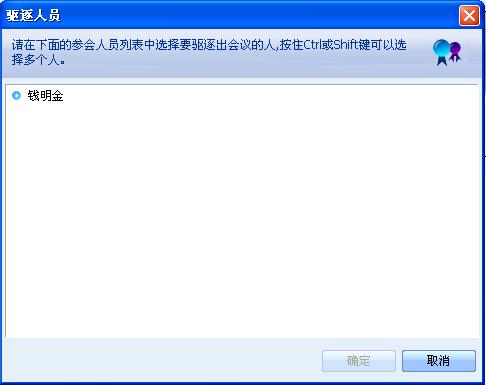

邀请联系人加入会议
邀请联系人加入会议
可以邀请不在会议中但在线的联系人加入会议，点击“会议”菜单选择“邀请加入会议”，弹出在线联系人的对话框，选中联系人，点击“确定”，联系人被加入到会议中。

图1 邀请加入会议
 从会议中驱逐参会人员
从会议中驱逐参会人员
可以从会议中驱逐参会人员，点击“会议”菜单选择“驱逐人员”，弹出参会人员的对话框，选中参会人员，点击“确定”，参会人员被踢出会议。不是每个参会人员都可以驱逐人员，只有会议主持人等有权限的参会人员才能驱逐人员。

图2 驱逐人员